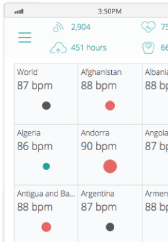
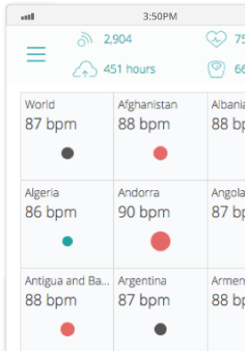
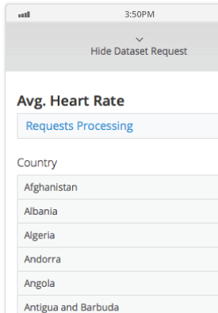
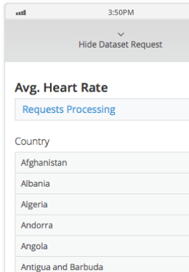

Background
BioMe is a fictitious company that provides health and fitness monitoring devices to consumers to improve their well-being.
In order to reach new markets and monetize their existing data assets, BioMe decided to aggregate and repackage its extensive biometric sensor data in order to deliver a value-added analytics service to research institutions and healthcare companies.
In this application, which is driven by the Pentaho platform, analysts and researchers can both view high-level health trends by country and select their own custom data sets for drill-down analysis and visualization.

 

 
